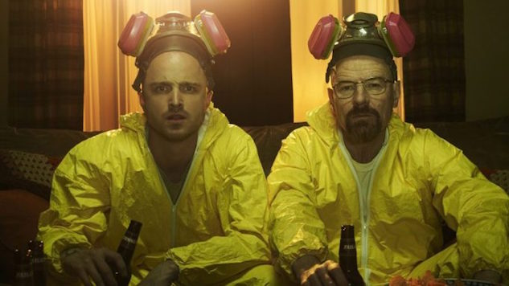

Les Acteurs
Noms
L'acteur de Walter White s'appele:
Bryan Cranston
L'acteur de Jesse Pinkman s'appele:
Aaron Paul

Bryan Cranston
Après la fin de Breaking Bad en 2013,
Bryan Cranston a eu sa première nomination aux Oscars après avoir joué dans Trumbo.
Il a aussi joué dans des films populaires comme Godzilla et Power Rangers.
Aaron Paul
Après la fin de "Breaking Bad",Paul a joué dans quelques films,
comme Need for Speed en 2014 et Central Intelligence en 2016.
En 2019, il a joué dans "El Camino" le film qui continue l'histoire de Breaking Bad.
Vous pouvez regarder le film en cliquant Ce lien